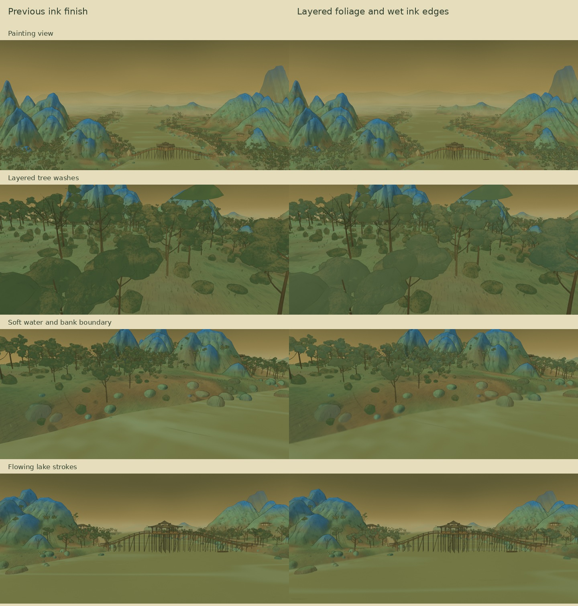

Circle the pavilion
A full circle around the bridge pavilion, followed by a pullback to the original painting view. Muted jade and olive tree washes, flowing water strokes and soft ink edges bring the banks together.
Preparing video…
40 seconds · 1600 × 720 · 24 fps · Ink brushwork, drifting mist, wind and water.
Compare the ink refinements
